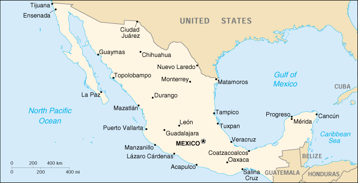

|
Mexico | |
| Introduction Geography People Government Economy Communications Transportation Military Transnational Issues | ||
|  | ||
| Mexico | Introduction | Top of Page |
| Background: | The site of advanced Amerindian civilizations, Mexico came under Spanish rule for three centuries before achieving independence early in the 19th century. A devaluation of the peso in late 1994 threw Mexico into economic turmoil, triggering the worst recession in over half a century. The nation continues to make an impressive recovery. Ongoing economic and social concerns include low real wages, underemployment for a large segment of the population, inequitable income distribution, and few advancement opportunities for the largely Amerindian population in the impoverished southern states. |
| Mexico | Geography | Top of Page |
| Location: | Middle America, bordering the Caribbean Sea and the Gulf of Mexico, between Belize and the US and bordering the North Pacific Ocean, between Guatemala and the US |
| Geographic coordinates: | 23 00 N, 102 00 W |
| Map references: | North America |
| Area: |
total:
1,972,550 sq km
land: 1,923,040 sq km water: 49,510 sq km |
| Area - comparative: | slightly less than three times the size of Texas |
| Land boundaries: |
total:
4,538 km
border countries: Belize 250 km, Guatemala 962 km, US 3,326 km |
| Coastline: | 9,330 km |
| Maritime claims: |
contiguous zone:
24 NM
continental shelf: 200 NM or to the edge of the continental margin exclusive economic zone: 200 NM territorial sea: 12 NM |
| Climate: | varies from tropical to desert |
| Terrain: | high, rugged mountains; low coastal plains; high plateaus; desert |
| Elevation extremes: |
lowest point:
Laguna Salada -10 m
highest point: Volcan Pico de Orizaba 5,700 m |
| Natural resources: | petroleum, silver, copper, gold, lead, zinc, natural gas, timber |
| Land use: |
arable land:
12%
permanent crops: 1% permanent pastures: 39% forests and woodland: 26% other: 22% (1993 est.) |
| Irrigated land: | 61,000 sq km (1993 est.) |
| Natural hazards: | tsunamis along the Pacific coast, volcanoes and destructive earthquakes in the center and south, and hurricanes on the Gulf of Mexico and Caribbean coasts |
| Environment - current issues: | natural fresh water resources scarce and polluted in north, inaccessible and poor quality in center and extreme southeast; raw sewage and industrial effluents polluting rivers in urban areas; deforestation; widespread erosion; desertification; serious air pollution in the national capital and urban centers along US-Mexico border |
| Environment - international agreements: |
party to:
Biodiversity, Climate Change, Climate Change-Kyoto Protocol, Desertification, Endangered Species, Hazardous Wastes, Law of the Sea, Marine Dumping, Marine Life Conservation, Nuclear Test Ban, Ozone Layer Protection, Ship Pollution, Wetlands, Whaling
signed, but not ratified: none of the selected agreements |
| Geography - note: | strategic location on southern border of US |
| Mexico | People | Top of Page |
| Population: | 101,879,171 (July 2001 est.) |
| Age structure: |
0-14 years:
33.32% (male 17,312,220; female 16,635,438)
15-64 years: 62.28% (male 30,888,015; female 32,558,359) 65 years and over: 4.4% (male 1,997,219; female 2,487,920) (2001 est.) |
| Population growth rate: | 1.5% (2001 est.) |
| Birth rate: | 22.77 births/1,000 population (2001 est.) |
| Death rate: | 5.02 deaths/1,000 population (2001 est.) |
| Net migration rate: | -2.77 migrant(s)/1,000 population (2001 est.) |
| Sex ratio: |
at birth:
1.05 male(s)/female
under 15 years: 1.04 male(s)/female 15-64 years: 0.95 male(s)/female 65 years and over: 0.8 male(s)/female total population: 0.97 male(s)/female (2001 est.) |
| Infant mortality rate: | 25.36 deaths/1,000 live births (2001 est.) |
| Life expectancy at birth: |
total population:
71.76 years
male: 68.73 years female: 74.93 years (2001 est.) |
| Total fertility rate: | 2.62 children born/woman (2001 est.) |
| HIV/AIDS - adult prevalence rate: | 0.29% (1999 est.) |
| HIV/AIDS - people living with HIV/AIDS: | 150,000 (1999 est.) |
| HIV/AIDS - deaths: | 4,700 (1999 est.) |
| Nationality: |
noun:
Mexican(s)
adjective: Mexican |
| Ethnic groups: | mestizo (Amerindian-Spanish) 60%, Amerindian or predominantly Amerindian 30%, white 9%, other 1% |
| Religions: | nominally Roman Catholic 89%, Protestant 6%, other 5% |
| Languages: | Spanish, various Mayan, Nahuatl, and other regional indigenous languages |
| Literacy: |
definition:
age 15 and over can read and write
total population: 89.6% male: 91.8% female: 87.4% (1995 est.) |
| Mexico | Government | Top of Page |
| Country name: |
conventional long form:
United Mexican States
conventional short form: Mexico local long form: Estados Unidos Mexicanos local short form: Mexico |
| Government type: | federal republic |
| Capital: | Mexico |
| Administrative divisions: | 31 states (estados, singular - estado) and 1 federal district* (distrito federal); Aguascalientes, Baja California, Baja California Sur, Campeche, Chiapas, Chihuahua, Coahuila de Zaragoza, Colima, Distrito Federal*, Durango, Guanajuato, Guerrero, Hidalgo, Jalisco, Mexico, Michoacan de Ocampo, Morelos, Nayarit, Nuevo Leon, Oaxaca, Puebla, Queretaro de Arteaga, Quintana Roo, San Luis Potosi, Sinaloa, Sonora, Tabasco, Tamaulipas, Tlaxcala, Veracruz-Llave, Yucatan, Zacatecas |
| Independence: | 16 September 1810 (from Spain) |
| National holiday: | Independence Day, 16 September (1810) |
| Constitution: | 5 February 1917 |
| Legal system: | mixture of US constitutional theory and civil law system; judicial review of legislative acts; accepts compulsory ICJ jurisdiction, with reservations |
| Suffrage: | 18 years of age; universal and compulsory (but not enforced) |
| Executive branch: |
chief of state:
President Vicente FOX Quesada (since 1 December 2000); note - the president is both the chief of state and head of government
head of government: President Vicente FOX Quesada (since 1 December 2000); note - the president is both the chief of state and head of government cabinet: Cabinet appointed by the president; note - appointment of attorney general requires consent of the Senate elections: president elected by popular vote for a six-year term; election last held 2 July 2000 (next to be held NA July 2006) election results: Vicente FOX Quesada elected president; percent of vote - Vicente FOX Quesada (PAN) 42.52%, Francisco LABASTIDA Ochoa (PRI) 36.1%, Cuauhtemoc CARDENAS Solorzano (PRD) 16.64%, other 4.74% |
| Legislative branch: |
bicameral National Congress or Congreso de la Union consists of the Senate or Camara de Senadores (128 seats; 96 are elected by popular vote to serve six-year terms, and 32 are allocated on the basis of each party's popular vote) and the Federal Chamber of Deputies or Camara Federal de Diputados (500 seats; 300 members are directly elected by popular vote to serve three-year terms; remaining 200 members are allocated on the basis of each party's popular vote, also for three-year terms)
elections: Senate - last held 2 July 2000 for all of the seats (next to be held NA 2006); Chamber of Deputies - last held 2 July 2000 (next to be held NA 2003) election results: Senate - percent of vote by party - NA%; seats by party - PRI 59, PAN 45, PRD 17, PVEM 5, PT 1, PCD 1; Chamber of Deputies - percent of vote by party - NA%; seats by party - PRI 211, PAN 208, PRD 50, PVEM 16, PT 7, PCD 3, PSN 3, PAS 2 |
| Judicial branch: | Supreme Court of Justice or Corte Suprema de Justicia (judges are appointed by the president with consent of the Senate) |
| Political parties and leaders: | Convergence for Democracy or CD [Dante DELGADO Ranauro]; Institutional Revolutionary Party or PRI [Dulce Maria SAURI Riancho]; Mexican Green Ecological Party or PVEM [Jorge GONZALEZ Torres]; National Action Party or PAN [Luis Felipe BRAVO Mena]; Party of the Democratic Center or PCD [Manuel CAMACHO Solis]; Party of the Democratic Revolution or PRD [Amalia GARCIA Medina]; Party of the Nationalist Society or PSN [Gustavo RIOJAIS Santana]; Social Alliance Party or PAS [Jose Antonio CALDERON Cardoso]; Workers Party or PT [Alberto ANAYA Gutierrez] |
| Political pressure groups and leaders: | Confederation of Employers of the Mexican Republic or COPARMEX; Confederation of Industrial Chambers or CONCAMIN; Confederation of Mexican Workers or CTM; Confederation of National Chambers of Commerce or CONCANACO; Coordinator for Foreign Trade Business Organizations or COECE; Federation of Unions Providing Goods and Services or FESEBES; National Chamber of Transformation Industries or CANACINTRA; National Peasant Confederation or CNC; National Union of Workers or UNT; Regional Confederation of Mexican Workers or CROM; Revolutionary Confederation of Workers and Peasants or CROC; Roman Catholic Church |
| International organization participation: | APEC, BCIE, BIS, Caricom (observer), CCC, CDB, CE (observer), EBRD, ECLAC, FAO, G-3, G-6, G-11, G-15, G-19, G-24, IADB, IAEA, IBRD, ICAO, ICC, ICFTU, ICRM, IDA, IEA (observer), IFAD, IFC, IFRCS, ILO, IMF, IMO, Inmarsat, Intelsat, Interpol, IOC, IOM (observer), ISO, ITU, LAES, LAIA, NAM (observer), NEA, OAS, OECD, OPANAL, OPCW, PCA, RG, UN, UNCTAD, UNESCO, UNIDO, UNITAR, UNU, UPU, WCL, WFTU, WHO, WIPO, WMO, WToO, WTrO |
| Diplomatic representation in the US: |
chief of mission:
Ambassador Juan Jose BREMER Martino
chancery: 1911 Pennsylvania Avenue NW, Washington, DC 20006 telephone: [1] (202) 728-1600 FAX: [1] (202) 728-1698 consulate(s) general: Atlanta, Austin, Boston, Chicago, Dallas, Denver, El Paso, Houston, Laredo (Texas), Los Angeles, Miami, New Orleans, New York, Nogales (Arizona), Phoenix, Sacramento, San Antonio, San Diego, San Francisco, San Juan (Puerto Rico) consulate(s): Albuquerque, Brownsville (Texas), Calexico (California), Corpus Christi, Del Rio (Texas), Detroit, Douglas (Arizona), Eagle Pass (Texas), Fresno (California), McAllen (Texas), Midland (Texas), Orlando, Oxnard (California), Philadelphia, Portland (Oregon), St. Louis, Salt Lake City, San Bernardino, San Jose, Santa Ana (California), Seattle, Tucson |
| Diplomatic representation from the US: |
chief of mission:
Ambassador Jeffery DAVIDOW
embassy: Paseo de la Reforma 305, Colonia Cuauhtemoc, 06500 Mexico, Distrito Federal mailing address: P. O. Box 3087, Laredo, TX 78044-3087 telephone: [52] (5) 209-9100 FAX: [52] (5) 208-3373, 511-9980 consulate(s) general: Ciudad Juarez, Guadalajara, Monterrey, Tijuana consulate(s): Hermosillo, Matamoros, Merida, Nuevo Laredo, Nogales |
| Flag description: | three equal vertical bands of green (hoist side), white, and red; the coat of arms (an eagle perched on a cactus with a snake in its beak) is centered in the white band |
| Mexico | Economy | Top of Page |
| Economy - overview: | Mexico has a free market economy with a mixture of modern and outmoded industry and agriculture, increasingly dominated by the private sector. The number of state-owned enterprises in Mexico has fallen from more than 1,000 in 1982 to fewer than 200 in 2000. The ZEDILLO administration privatized and expanded competition in seaports, railroads, telecommunications, electricity, natural gas distribution, and airports. A strong export sector helped to cushion the economy's decline in 1995 and led the recovery in 1996-2000. Private consumption became the leading driver of growth in 2000, accompanied by increased employment and higher real wages. Mexico still needs to overcome many structural problems as it strives to modernize its economy and raise living standards. Income distribution is very unequal, with the top 20% of income earners accounting for 55% of income. Trade with the US and Canada has tripled since NAFTA was implemented in 1994. Mexico completed free trade agreements with the EU, Israel, El Salvador, Honduras, and Guatemala in 2000, and is pursuing additional trade agreements with countries in Latin America and Asia to lessen its dependence on the US. |
| GDP: | purchasing power parity - $915 billion (2000 est.) |
| GDP - real growth rate: | 7.1% (2000 est.) |
| GDP - per capita: | purchasing power parity - $9,100 (2000 est.) |
| GDP - composition by sector: |
agriculture:
5%
industry: 27% services: 68% (2000) |
| Population below poverty line: | 27% (1998 est.) |
| Household income or consumption by percentage share: |
lowest 10%:
1.8%
highest 10%: 36.6% (1996) |
| Inflation rate (consumer prices): | 9% (2000 est.) |
| Labor force: | 39.8 million (2000) |
| Labor force - by occupation: | agriculture 20%, industry 24%, services 56% (1998) |
| Unemployment rate: | urban - 2.2% (2000); plus considerable underemployment |
| Budget: |
revenues:
$125 billion
expenditures: $130 billion, including capital expenditures of $NA (2000 est.) |
| Industries: | food and beverages, tobacco, chemicals, iron and steel, petroleum, mining, textiles, clothing, motor vehicles, consumer durables, tourism |
| Industrial production growth rate: | 7.5% (2000 est.) |
| Electricity - production: | 182.492 billion kWh (1999) |
| Electricity - production by source: |
fossil fuel:
74.12%
hydro: 17.75% nuclear: 5.21% other: 2.92% (1999) |
| Electricity - consumption: | 170.754 billion kWh (1999) |
| Electricity - exports: | 11 million kWh (1999) |
| Electricity - imports: | 1.047 billion kWh (1999) |
| Agriculture - products: | corn, wheat, soybeans, rice, beans, cotton, coffee, fruit, tomatoes; beef, poultry, dairy products; wood products |
| Exports: | $168 billion (f.o.b., 2000), includes in-bond industries (assembly plant operations) |
| Exports - commodities: | manufactured goods, oil and oil products, silver, fruits, vegetables, coffee, cotton |
| Exports - partners: | US 88.6%, Canada 2%, Spain 0.9%, Germany 0.9%, Japan 0.6%, UK 0.6%, Netherlands Antilles 0.5%, Switzerland 0.3% Venezuela 0.3%, Chile 0.3% (2000 est.) |
| Imports: | $176 billion (f.o.b., 2000), includes in-bond industries (assembly plant operations) |
| Imports - commodities: | metal-working machines, steel mill products, agricultural machinery, electrical equipment, car parts for assembly, repair parts for motor vehicles, aircraft, and aircraft parts |
| Imports - partners: | US 73.6%, Japan 3.7%, Germany 3.3%, Canada 2.3%, South Korea 2%, China 1.6%, Taiwan 1.2%, Italy 1%, Brazil 1% (2000 est.) |
| Debt - external: | $162 billion (2000) |
| Economic aid - recipient: | $1.166 billion (1995) |
| Currency: | Mexican peso (MXN) |
| Currency code: | MXN |
| Exchange rates: | Mexican pesos per US dollar - 9.7701 (January 2001), 9.4556 (2000), 9.5604 (1999), 9.1360 (1998), 7.9185 (1997), 7.5994 (1996) |
| Fiscal year: | calendar year |
| Mexico | Communications | Top of Page |
| Telephones - main lines in use: | 9.6 million (1998) |
| Telephones - mobile cellular: | 2.02 million (1998) |
| Telephone system: |
general assessment:
low telephone density with about 11 main lines per 100 persons; privatized in December 1990; the opening to competition in January 1997 has brightened prospects for development
domestic: adequate telephone service for business and government, but the population is poorly served; domestic satellite system with 120 earth stations; extensive microwave radio relay network; considerable use of fiber-optic cable, coaxial cable, and mobile cellular service international: satellite earth stations - 32 Intelsat, 2 Solidaridad (giving Mexico improved access to South America, Central America, and much of the US as well as enhancing domestic communications), numerous Inmarsat mobile earth stations; linked to Central American Microwave System of trunk connections; high capacity Columbus-2 fiber-optic submarine cable with access to the US, Virgin Islands, Canary Islands, Morocco, Spain, and Italy (1997) |
| Radio broadcast stations: | AM 865, FM about 500, shortwave 13 (1999) |
| Radios: | 31 million (1997) |
| Television broadcast stations: | 236 (plus repeaters) (1997) |
| Televisions: | 25.6 million (1997) |
| Internet country code: | .mx |
| Internet Service Providers (ISPs): | 51 (2000) |
| Internet users: | 2.5 million (2000) |
| Mexico | Transportation | Top of Page |
| Railways: |
total:
31,048 km
standard gauge: 30,958 km 1.435-m gauge (246 km electrified) narrow gauge: 90 km 0.914-m gauge (1998 est.) |
| Highways: |
total:
323,977 km
paved: 96,221 km (including 6,335 km of expressways) unpaved: 227,756 km (1997) |
| Waterways: |
2,900 km
note: navigable rivers and coastal canals |
| Pipelines: | crude oil 28,200 km; petroleum products 10,150 km; natural gas 13,254 km; petrochemical 1,400 km |
| Ports and harbors: | Acapulco, Altamira, Coatzacoalcos, Ensenada, Guaymas, La Paz, Lazaro Cardenas, Manzanillo, Mazatlan, Progreso, Salina Cruz, Tampico, Topolobampo, Tuxpan, Veracruz |
| Merchant marine: |
total:
43 ships (1,000 GRT or over) totaling 590,657 GRT/920,456 DWT
ships by type: bulk 2, cargo 1, chemical tanker 4, liquefied gas 3, petroleum tanker 28, roll on/roll off 2, short-sea passenger 3 (2000 est.) |
| Airports: | 1,848 (2000 est.) |
| Airports - with paved runways: |
total:
238
over 3,047 m: 11 2,438 to 3,047 m: 28 1,524 to 2,437 m: 90 914 to 1,523 m: 82 under 914 m: 27 (2000 est.) |
| Airports - with unpaved runways: |
total:
1,610
over 3,047 m: 1 2,438 to 3,047 m: 1 1,524 to 2,437 m: 65 914 to 1,523 m: 470 under 914 m: 1,073 (2000 est.) |
| Heliports: | 2 (2000 est.) |
| Mexico | Military | Top of Page |
| Military branches: | National Defense Secretariat (includes Army and Air Force), Navy Secretariat (includes Naval Air and Naval Infantry) |
| Military manpower - military age: |
18 years of age
note: starting in 2000, females will be allowed to volunteer for military service |
| Military manpower - availability: | males age 15-49: 26,703,300 (2001 est.) |
| Military manpower - fit for military service: | males age 15-49: 19,394,184 (2001 est.) |
| Military manpower - reaching military age annually: | males: 1,077,536 (2001 est.) |
| Military expenditures - dollar figure: | $4 billion (FY99) |
| Military expenditures - percent of GDP: | 1% (FY99) |
| Mexico | Transnational Issues | Top of Page |
| Disputes - international: | none |
| Illicit drugs: | illicit cultivation of opium poppy (cultivation in 2000 - 1,900 hectares; potential heroin production - 2.4 metric tons) and cannabis cultivation in 2000 - 3,900 hectares; government eradication efforts have been key in keeping illicit crop levels low; major supplier of heroin and marijuana to the US market; continues as the primary transshipment country for US-bound cocaine from South America; two major drug syndicates control majority of drug trafficking throughout the country; primary supplier of methamphetamine to the US market; growing producer and distributor of ecstasy |
{kind=link}